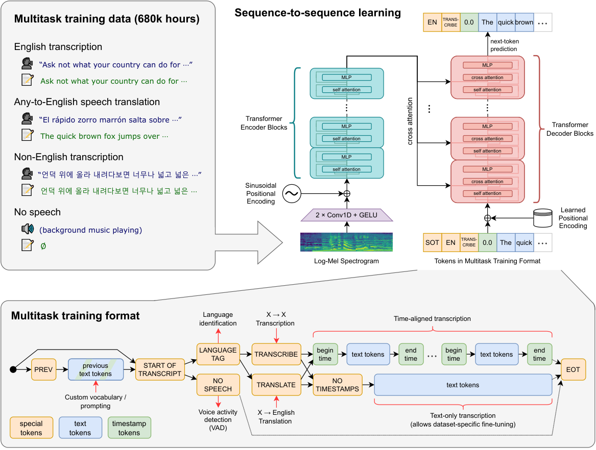
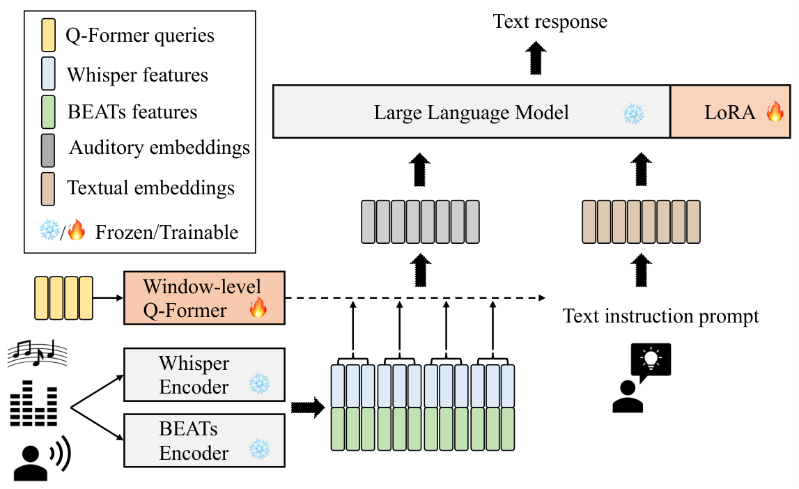
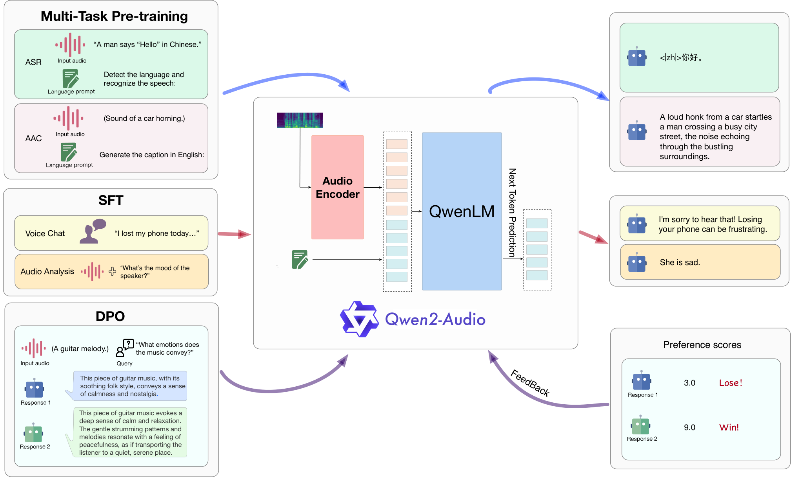

第 30 章 语音与音频多模态
💡 本章导读
音频是继视觉之后最重要的模态：对话是人的原生接口，语音承载情感、口音、韵律等文字无法编码的信息。本章沿"表示 → 理解 → 对话 → 生成"推进：先讲清音频怎么变成模型可吃的 token（RVQ 是核心发明），再用 Whisper 讲弱监督规模化，然后是 Speech-LLM 与全双工对话（GPT-4o 模式），最后是 TTS 克隆与音乐生成。你会发现一个熟悉的模式：音频领域也经历了"专用模型 → LLM 统一"的演变，其技术路线与视觉几乎是平行翻译——学完视觉部分的你应该常有"似曾相识"之感。
1.音频表示与 token 化：从波形到 RVQ
音频的原始形态是波形（一维电压采样，16–48 kHz、16bit），直接喂给 Transformer 太长（1 秒 1.6 万样本）。经典表示是log-mel 频谱：分帧加窗做 FFT，取幅度谱经 mel 滤波器组压缩到 80–128 维，取对数——把一维信号变成"伪图像"（时间×频率二维），人的听觉皮层对频率也近似对数感知，所以 mel 尺度既算术方便又感知合理。Whisper 用 80 维 log-mel 输入，是"频谱派"的代表。神经 token 化派则用编码器-解码器直接学离散码本：SoundStream（arXiv:2107.03312，Google）与 EnCodec（arXiv:2210.13438，Meta）都引入了残差向量量化（RVQ）——第一层 VQ 量化"最粗"的残差，第二层量化"第一层没解释掉"的残差，如此叠加 N 层：第一层码本承载语义骨架，越往后层越偏细节纹理。
📐 理论：RVQ 的分层直觉与码率算术
设 N 层 RVQ、每层码本 $K{=}1024$、帧率 $f{=}75$ Hz（EnCodec 24kHz 档）：总码率 = $N \times \log_2 K \times f$ bit/s。$N{=}8$ 时约 600 bps×... = $8\times10\times75=6$ kbps——每个"语义级"信息只需约 750 bps。这个分层性有实测支撑：MusicGen 论文附录显示，只保留第一层码本时音乐旋律大体可辨、音色丢失；加上后几层则质感回归。这直接启发了两类架构：①语音生成用"语义 token（前 1–2 层或 HuBERT 蒸馏）+ 声学 token（全部 N 层）"的两级生成（VALL-E 第 5 节）；②理解类模型只需要语义层（Speech-LLM 的 audio encoder 目标）。RVQ 的"层=信息层级"是音频 tokenizer 最优雅的性质，视觉 VQ（第 19 章"按冗余付费"的困境）还没有找到等价物——这也是音视频统一 tokenizer 难产的原因之一。
工程细节卡：从波形到频谱的五个旋钮。①采样率——16 kHz 是 ASR 事实标准（语音信息主要在 8 kHz 内），48 kHz 留给音乐；②窗长/帧移——25 ms 窗、10 ms 帧移是黄金参数（时频分辨率的折中）；③mel 带数——80（Whisper/一般 ASR）到 128（音乐）；④对数底——log 与 dB 只差常数，对压缩动态范围是关键；⑤归一化——Whisper 用全局均值方差（数据集级而非逐样本），这一点对鲁棒性重要到被写进复现指南。为什么卷积前端普遍是两层 3×3：第一层感受野覆盖短时音素，第二层跨帧组合成"伪音节"，等效下采样 2 倍——seq 长度减半对 30 秒窗口（3000 帧→1500）是必须的。这些参数在 Whisper/Qwen-Audio/多数语音模型间高度一致——音频前端已经"标准化"，新模型不再重复发明。
log-mel 的两步数学（面试高频）：①STFT——对每帧信号加窗（Hann）做 DFT，取幅度平方得功率谱 $P(f,t)$；②mel 投影——用 M 个三角滤波器在 mel 刻度上均匀铺开：$\mathrm{mel}(f)=2595\log_{10}(1+f/700)$，线性频轴被"低频拉开、高频压扁"，再取对数 $\log\sum_f M_{mf}P(f,t)$ 抑制乘性噪声（增益变化变加性偏移）。为什么取对数是关键一步：人耳响度感知近似对数（Weber-Fechner），且对数域里卷积性混响近似可加分解——一个非线性换轴同时解决感知合理性与数学可分性，这是特征工程时代留给深度时代最耐用的一件遗产。
音频与视觉的三点结构差异（决定两者技术路线的分岔）：①一维 vs 二维——波形是一维时间信号，没有空间结构，卷积的"平移不变"对应的是时间平移，感受野设计完全不同；②内容+音色双信息流——同一句话换人说，"语义"不变而"声学"全变，音频表示必须解耦这两者（RVQ 分层是天然解法），视觉没有对应问题；③时间不可跳读——图像可以看任意区域，音频必须沿时间轴顺序到达，这使流式/因果建模在音频里是一等公民而非优化项。带着这三点差异去读视觉章节的对应技术，你会发现每个"音频版设计"都是这三个差异的直接推论。
2.Whisper：弱监督规模化的教科书
Whisper（OpenAI，arXiv:2212.04356）是"scaling + 弱监督"在语音上的完整演绎：从网络爬取 68 万小时音频（97% 非人工精标，靠来源启发式过滤+多候选一致性清洗），用标准 encoder-decoder Transformer（在 80 维 log-mel 上加两层卷积下采样）训练多任务序列到序列——任务用特殊 token 指定（转录/翻译/语言识别/时间戳/VAD），训练时随机混合任务，推理时"你想让它干什么就给什么任务 token"。三个设计教训：①不做任何预训练创新，把力气花在数据清洗与多任务上——弱监督规模化的胜利；②多语言混训带来意外的噪声鲁棒性（网络音频的口音/背景噪声反而成了增强）；③长音频用 30 秒窗口+滑动推理，时间戳 token 保证切分对齐。Whisper 开源后成为全球 ASR 事实基座：蒸馏版（faster-whisper）、微调生态、以及后来 Qwen-Audio 等模型的语音前端都是它的后代。它也定义了"语音的 CLIP 时刻"——一个大规模多任务基础模型冻结后，可被下游各种语音任务复用。
数据清洗配方值得逐条看（被后续所有语音数据工程沿用）：①来源过滤——播客/有声书优先（口音清晰、录音质量高），短视频降权；②一致性筛选——同一音频若有多个来源字幕，取多数一致者，全不一致则丢弃；③语言检测双确认——外部检测器与 Whisper 自身检测一致才保留；④词错率自举——用小模型预筛，WER 异常高的样本（字幕与音频不符）剔除；⑤人声占比——VAD 检测有效语音比例过低（背景音乐过重）剔除。这五条让 68 万小时"脏数据"的噪声水平接近精标集——弱监督不等于不清洗，恰恰相反，清洗就是全部。
💻 代码：Whisper 推理与（给 Speech-LLM 用的）encoder 提取
from transformers import WhisperModel, WhisperProcessor
import torch, librosa
# --- 常规转录（faster-whisper 生产路径更快，此处为 HF 标准写法）---
from transformers import WhisperForConditionalGeneration
proc = WhisperProcessor.from_pretrained("openai/whisper-large-v3")
model = WhisperForConditionalGeneration.from_pretrained(
"openai/whisper-large-v3", torch_dtype=torch.float16).to("cuda")
audio, _ = librosa.load("meeting_zh.wav", sr=16000) # 关键：统一 16k
inputs = proc(audio, sampling_rate=16000, return_tensors="pt").to("cuda", torch.float16)
ids = model.generate(inputs.input_features,
language="zh", task="transcribe",
return_timestamps=True) # 时间戳 token 解码
print(proc.batch_decode(ids, skip_special_tokens=False))
# --- 取 encoder 语义向量（Speech-LLM 的音频前端用法）---
enc = WhisperModel.from_pretrained("openai/whisper-large-v3").encoder.to("cuda")
with torch.no_grad():
hidden = enc(inputs.input_features).last_hidden_state # [B, 1500, 1280]
# 1500 帧×1280 维 →（桥接层下采样/池化）→ 送入 LLM工程要点：①重采样到 16 kHz 是最常见的静默 bug 来源（8k 上采的音频 WER 翻倍）；②language 参数不指定时 Whisper 会"猜语言"——前 30 秒没有语音时会猜错，生产代码请显式传；③Speech-LLM 复用 Whisper encoder 时通常跳过其解码器，只取 encoder 层（或倒数第 k 层，研究发现中层语义最通用）。

选 tokenizer 看三个数：帧率（Hz，越低 token 越省）、码本层数与总码率（kbps，决定音质上限）、重建客观分（PESQ/ESTOI）——EnCodec 24kHz 档为 75Hz/8 层/约 6kbps，已成为语音生成系统的"默认货币"，选型时先用它对齐基准再谈优化。
3.Speech-LLM：让 LLM 听见世界
Speech-LLM 的架构公式与视觉 MLLM（第 12–13 章）完全同构：音频编码器 + 模态桥 + LLM。SALMONN（字节/清华，arXiv:2310.13289）的贡献在桥上：双编码器（Whisper 做语义 + BEATs 做听觉细节）经窗口级 Q-Former 融合再接 LLM，能同时处理语音识别、翻译、音频事件、音乐理解——证明"多编码器互补"在音频同样成立。Qwen2-Audio（阿里，arXiv:2407.10759）展示了三阶段训练法的完整配方：①模态对齐预训练（22 万小时音频-文本对，冻 LLM 训 encoder+adapter）；②多任务 SFT（语音对话、声音事件推理、音乐分析混训）；③DPO 对齐（人类偏好数据，含"拒答幻觉内容"——听到不存在的词要说不确定）。Step-Audio（阶步，2025）则把"理解-生成一体"做进 130B 级模型：语音理解、可控 TTS（情感/方言/语速指令）、音乐感知统一在一个 tokenizer（130Hz 码率）+双码本（语义+声学）框架里。共同趋势：编码器从 Whisper 一统到多编码器分工；桥从 Q-Former 到更简单的 MLP（视觉的教训重演：简单桥+大数据优于复杂桥+小数据）；训练 recipe 全面复用视觉 MLLM 的三段论（预训练对齐→SFT→偏好优化）。
评测基准速查：AIR-Bench（语音识别/翻译/情感/事件/音乐五类，英语中文双语）、AudioBench（含指令跟随）、Dynamic-SUPERB（55 任务动态收集）。共同发现：Speech-LLM 在"听写"上接近专用模型，但在"听懂"（跨句推理、事件因果、"说话人为什么生气"）上与人类差距仍大——音频理解的天花板不在耳朵在脑子，这同样是 LLM 推理能力的外溢问题（第 44 章）。


📄 论文精读：Qwen2-Audio（arXiv:2407.10759）
意义：开源语音对话模型的 recipe 基准，三阶段训练法的标准参考实现。数据账：预训练 22 万小时（语音对话 45%+ 声音事件 20%+ 音乐 25%+ 混合），清洗策略包括"ASR 置信度过滤+VAD 切分+去重"；SFT 数据刻意覆盖单轮/多轮/多说话人/多语言切换四种形态。DPO 阶段的独特设计：负样本不是"错误答案"而是"幻觉答案"（把背景杂音硬识别成词）与"越权答案"（没被问到却长篇大论）——对齐目标直指语音 LLM 的两大顽疾。评测：AIR-Bench 上开源第一梯队，语音推理类任务（数人数、事件顺序）的提升主要来自预训练阶段的声音事件数据占比——数据配比决定能力分布又一次被验证。可复用性：论文公开了数据构成比例与训练超参，社区复现（如多数中文语音助手）的成本极低，是"读论文→照抄配方"的最佳练习题。
语音对话数据的特殊性：文本 SFT 数据（第 16 章）直接拿来用会"水土不服"——语音对话的真实分布是不完整句、打断、重复、语气词（"呃……就是那个……"），教科书式问答反而不真实。Qwen2-Audio 与 GLM-4-Voice 的做法：①从真实客服/播客对话挖掘口语化样本，ASR 转写后人工净化；②模拟副语言标注——在文本里插入 [笑]/[叹气]/[停顿] 标记训练模型对情感的反应；③多轮长程——语音对话的轮均长度显著短于文本 chat，但轮数更多，需要长程记忆数据；④中英混说（code-switch）数据是中文模型的必修课，占比 3–5% 即可显著改善。语音 SFT 数据的成本结构：真实对话贵、模拟对话假——两段配比是各家秘方。
桥的选择：音频比视觉更纠结。视觉 MLLM 已收敛到"MLP 简桥"（第 13 章结论），音频还在三派竞争：①连续向量派（Whisper/SALMONN）——encoder 输出直接（或 Q-Former 压缩后）进 LLM，保留连续声学细节，但 token 数多（1500 帧/30 秒）；②离散 token 派（Spirit-LM、GLM-4-Voice）——音频过 RVQ 变 token 与文本同表，"听、说"共用一个序列，全双工友好，但量化损失细节；③双码本派（Step-Audio）——语义码本管内容、声学码本管音色，两条流分别适配理解与生成。选型口诀：偏理解选连续派（细节多、成熟），偏对话选离散派（延迟低、流式好），一体机选双码本。这个分歧的根本原因是音频有"内容+音色"双重信息结构，视觉相对单一——模态的信息结构决定桥的设计空间。
| 方案 | 代表 | token 效率 | 声学细节 | 全双工适配 | 适用场景 |
|---|---|---|---|---|---|
| 连续向量+Q-Former | SALMONN | 中 | 高 | 弱 | 理解/分析类 |
| 连续向量+MLP | Qwen2-Audio | 低（帧多） | 高 | 中 | 通用理解对话 |
| 离散 RVQ token | GLM-4-Voice | 高 | 中 | 强 | 实时语音对话 |
| 双码本（语义+声学） | Step-Audio | 中 | 高 | 强 | 理解生成一体 |
4.全双工对话：GPT-4o 模式的工程本质
传统语音助手的交互是回合制的（你说完→我识别→我思考→我合成→你说），每次响应延迟 2–4 秒，且无法被打断。GPT-4o（2024.05）演示的全双工（可插话、即时接话、感知对方情绪语气、平均响应 300 毫秒级）确立了新范式。工程本质有三条路线：①级联流水线（ASR→LLM→TTS）：可解释可控，但延迟下限被流水线长度锁死，且丢失副语言信息（语气在 ASR 时就被丢掉了）；②端到端 Speech-LLM（GPT-4o 模式，社区推测）：语音 token 直进直出，韵律与情感原生保留，延迟源于流式解码；③流式分时训练（2025 年开源方向）：模型边听边说、输入输出 token 交织（duplex token stream），代表开源工作如 GLM-4-Voice、Moshi（Kyutai，arXiv:2410.00037——7B 全双工、双通道 token 流模拟"同时听与说"）。全双工的核心技术债是"话轮转换"（turn-taking）：人靠语调、停顿、呼吸判断对方说没说完——模型需要学"何时该接话、何时该沉默"，这是对话动力学问题而非语音问题，2026 年仍在演进。
副语言信息的价值几何？同一句"行"，升调是疑问、降调是敷衍、带着笑是宠溺——级联 ASR 把这些全部压扁成同一个"行"字。端到端模型的实测优势恰在此处：情感识别准确率比"文本后处理"路线高 15–20 个百分点（MELD/IEMOCAP 口径），且能对"语气与内容矛盾"（文字客气、语调冰冷）做出综合判断。这决定了语音助手的用途分层：查天气/设闹钟（内容为主）级联够用；心理咨询、销售陪练、陪伴型产品（副语言为主）必须端到端。副语言不是锦上添花，是某些场景的全部。
落地建议：如果你的产品要"听懂情绪"，优先在评测集里加入语气-内容矛盾样本（客气话+冰冷语调），通用基准不覆盖这类案例——它们恰恰是投诉与退订的高发点。
补充一例：客服质检场景里"语速突然加快+打断"是投诉前兆信号，副语言检测在此处的商业价值高于任何内容关键词。
延迟预算表（工程必算）：端到端语音对话的"感知即时"阈值约 700ms（人类对话的自然停顿上限），预算拆分——网络往返 ~50ms、音频分帧缓冲 ~80ms（帧太小则韵律信息不足）、模型首 token ~300ms（流式 ASR/LLM）、TTS 首包 ~150ms、播放缓冲 ~50ms——合计约 630ms，每一项都是硬约束；级联方案光是 ASR 完整解码就常超预算。这也解释了为什么语音模型偏爱小参数+流式（Moshi 7B、GLM-4-Voice 9B），而离线转写可以上 30B——延迟等级决定模型规模预算。
话轮转换的技术化拆解：模型需要在"对方还在说"的流里持续决策——现在接话（对方已说完）、继续等（对方在停顿思考）、还是抢先（打断）。Moshi 的做法是给"说"通道引入内部独白 token（先在内部想好再说，降低插嘴率）；GLM-4-Voice 等用流式 ASR 的句末概率+韵律特征做双门控。评测也在追这个问题：全双工对话评测需要"时间轴对齐"的对话语料与延迟计分，2025 年出现的 FullDuplexBench 是第一个系统尝试。
📜 历史注脚：从 30 年前的"语音芯片梦"到 300ms
📄 论文精读：Whisper 的"多任务 token"设计（arXiv:2212.04356）
接口设计细节：解码序列开头是一串控制 token——<|startoftranscript|><|en|><|transcribe|><|0.0|>...（语言、任务、时间戳逐段编码），这套"前缀即指令"的设计比 LLM 的 system prompt 时代更早，可视为多任务接口的先声。为什么时间戳 token 重要：它让"转写"变成"对齐"——视频字幕、会议纪要分条、下游词级编辑全部依赖时间轴；也使长音频可按 30 秒窗口切片推理后精确拼接。失败模式：静音/纯音乐段的"幻觉转写"（凭空编出句子）是 Whisper 最著名的缺陷，v3 通过noplay类 token 与 VAD 预处理缓解但未根除——弱监督数据的噪声分布会原样烙进模型行为，这条数据-行为因果律贯穿全书。
Whisper 生态速览（选型参考）：large-v3（质量天花板，多语言）、large-v3-turbo（4 解码层蒸馏，速度 6 倍、WER 仅微升，生产首选）、medium/small/base（边缘端）、faster-whisper（CTranslate2 量化重写，同模型 4 倍速+省一半显存）、whisperX（词级对齐+说话人分离联用，会议纪要标配）。中文特化：SenseVoice（阿里，情感+事件标签，中文 WER 优于 Whisper-v3）、Paraformer（非自回归工业部署）。选型口诀：多语言看 Whisper、纯中文看 SenseVoice、要快看 turbo/CTranslate2、要词级时间戳看 whisperX。
1990 年代的消费电子业就梦想"自然语音交互"——但受限于算力，只能做"命令词识别"（识别 20 个固定词）。2011 年 Siri 用云端 ASR+命令式 UI 打开缺口，但"说到哪它听到哪"的尴尬持续了十年；2017 年端到端 ASR（Listen-Attend-Spell）取代 HMM-GMM 管线；2022 年 Whisper 用 68 万小时把"口音鲁棒"变默认；2024 年 GPT-4o 的 300ms 响应首次低于对话心理学给出的"自然停顿阈值"（约 700ms）——人机对话第一次"快过人"。三十年，三个数量级的延迟差：交互范式的革命最终由延迟数字宣布，而非 demo 视频。
5.TTS 与声音克隆：VALL-E、CosyVoice 与伦理边界
TTS 的范式迁移与生成领域主线一致：拼接合成→参数合成→神经自回归→零样本克隆。VALL-E（微软，arXiv:2301.02111）是分水岭：把 TTS 定义为"基于 EnCodec token 的语言模型任务"——3 秒注册音频算出声学 token 前缀，模型（1B 级，6 万小时训练）续写 token 即"克隆音色+韵律"。零样本克隆由此民主化：CosyVoice（阿里，2024）开源了"3 秒克隆+指令控制（说慢点/带笑意/东北话）"的完整方案，成为中文 TTS 生态主力；GPT-SoVITS 以少量样本微调在社区爆火。涌现能力：VALL-E 系模型展现出"续写韵律上下文"的能力——给它一句愤怒的样本前缀，续写的同一句话也带愤怒——韵律成了可上下文传播的属性。伦理边界：声音是最容易采集的生物特征，零样本克隆让"诈骗电话用亲人声音"成为真实威胁（2024 年多起真实案例）；负责任的做法成为行业标配——克隆前授权验证、合成音频加水印（AudioSeal，arXiv:2310.14776）、模型条款禁止克隆公众人物。本书立场：克隆技术本身中性，但"默认可克隆"的产品设计是失职——第 47 章安全伦理会再回到这个案例。
语音水印的现状与局限：AudioSeal 类方案在合成波形里嵌入不可感知水印，检测器可判"此音频为 AI 生成"，准确率 95%+；但抗删除性是软肋——重录音（放外放再录）、重编码（压成低码率 mp3）都会削水印。2024 年欧盟 AI Act 要求合成音频可检测，中国《人工智能生成合成内容标识办法》（2025 施行）要求显式+隐式双重标识——合规刚需正在把水印从"可选项"变成"出厂默认"，开源 TTS 不带水印将逐渐无法商用。
🍳 实战配方：CosyVoice2 零样本克隆与指令控制
1. 注册音：3–10 秒干净样本（降噪后、单说话人、无混响），采样率统一 16k/24k；样本质量决定克隆上限——垃圾进垃圾出在克隆任务上被放大。2. 合成：文本前可加指令标记如 [laughter]、<strong>、语速/方言控制 token；CosyVoice2 支持"在文本里用标记写戏"——情感与停顿的细粒度控制。3. 流式部署：CosyVoice2 的首包延迟约 150ms，可与流式 LLM 串成"低感知延迟"对话链。4. 合规三件套（生产必做）：克隆授权书留存、输出音频嵌入 AudioSeal 水印、日志审计每次克隆请求的身份验证。5. 验收指标：说话人相似度（resemblyzer 余弦 ≥0.85）、WER ≤5%、MOS ≥4.0——三线全过才可上线。风险清单：方言口音样本的伦理同意、公众人物声音的默示授权陷阱、以及"克隆声音朗读法律文书"这类高风险用例的一票否决。
TTS 的"后 VALL-E"技术栈拆解（CosyVoice2 为例）：①语义 tokenizer——蒸馏自 ASR 模型（把 HuBERT/Whisper 的中间表征量化到 25Hz 码流），保证"内容正确"；②声学 tokenizer——RVQ 细化音质；③LLM 主干——在文本+语义 token 上做自回归（可流式）；④扩散/流匹配声学解码——语义 token 到波形 token 的非自回归细化解码（并行、快、无累积误差）。"自回归管内容、并行扩散管音质"的两段式已成为 2024–2026 TTS 的主流模板——与视频生成"AR 管结构、扩散管渲染"（第 29 章 HunyuanImage/CogVideoX1.5 系）惊人同构。评测数据点：CosyVoice2 在 3 秒克隆上做到相似度 0.85+、WER 3% 级、首包 150ms——三指标同时达标的开源模型是生产可用的分水岭。
6.音乐与音效生成：MusicGen 与 AudioLDM
MusicGen（Meta，arXiv:2306.05284）是"LM over RVQ"的代表作：单层 Transformer 自回归生成 EnCodec token，核心技巧是码本并行+延迟交错（codebook interleaving）——第一层严格自回归（语义骨架要因果），后几层各延迟一步后并行生成（细节层可以"看一眼未来"），单模型兼顾质量与速度。条件注入用 T5 文本编码+旋律条件（chromagram，可"哼一段旋律让模型照着编曲"）。AudioLDM/Stable Audio 则走扩散路线：latent 扩散 over mel 频谱（AudioLDM）或 latent 过 EnCodec（Stable Audio Open），擅长音效与环境声（"雨打在铁皮屋顶上"），与 MusicGen 形成"LM 派管音乐结构、扩散派管声音质感"的分工。视频生成联动：2025 年 Veo 3/可灵实现了音视频联合生成——音频条件被并入视频 DiT 的联合注意力（第 29 章架构的自然延伸），"画面里杯子落地，声音同时响"的视听同步成为新的评测维度。音乐生成的版权暗礁：旋律/和弦进行的训练数据版权争议（Suno/Udio 诉讼案，2024–）尚未了结，开源团队用授权曲库（CC 授权音乐）是更稳的路线。
音频在多模态体系中的位置正在变化：2025 年前的主流仍是"音频专用模型+文本总线"（语音模型与视觉模型各自挂到 LLM 上）；2025 年后的旗舰走向"全模态一体"——Gemini 2.5、GPT-4o、Qwen3-Omni 类模型把文本/图像/音频/视频放进同一个 tokenizer 序列（音频走 RVQ 码流、视频走 spacetime patch），一次预训练吃所有模态。全模态一体的代价是数据配比工程的复杂度爆炸（音频数据天然少 1–2 个数量级，配比失衡会导致"聋子 LLM"或"哑巴 LLM"），第 35 章预训练章节会展开"模态配比"的调参方法论。
音乐生成的"长程结构"难题：3 分钟的曲子有主歌副歌的宏观结构，而自回归模型的优势窗只有几十秒——生成结果"局部连贯、宏观漂移"（副歌第二次出现时调性跑了）。三条缓解路线：①分段条件+续写（把曲式写进 prompt：[verse][chorus]，逐段生成并以前段为上下文）；②长上下文模型（MusicGen 后继与 Suno 系用 128k+ 上下文的 LLM 骨架直接整曲生成，2025 年闭源旗舰的主路线）；③符号先验混合（先用符号引擎定和弦进行，再让模型"照谱演奏"）。与文本写作的"大纲-成文"两段法同构——长序列生成的宏观一致性永远需要"结构先验"供给，这是跨模态的通用难题（小说生成、视频分镜同理）。
💻 代码：MusicGen 条件生成与旋律跟随
from transformers import AutoProcessor, MusicgenForConditionalGeneration
import torch, librosa
proc = AutoProcessor.from_pretrained("facebook/musicgen-melody")
model = MusicgenForConditionalGeneration.from_pretrained(
"facebook/musicgen-melody").to("cuda")
# 纯文本条件：风格描述要具体（乐器/节奏/年代/场景）
text = ["lo-fi hip hop, 85 bpm, rain ambience, vinyl crackle, warm Rhodes piano"]
# 旋律条件：哼 8 秒参考旋律，模型照此编曲
melody, _ = librosa.load("hum.wav", sr=32000, mono=True)
inputs = proc(text=text, audio=[melody], padding=True, return_tensors="pt").to("cuda")
audio = model.generate(**inputs, do_sample=True, guidance_scale=3.0,
max_new_tokens=1500) # 每帧 50Hz → 1500≈30 秒
# 保存：scipy.io.wavfile.write("out.wav", 32000, audio[0,0].cpu().numpy())要点：①guidance_scale 是 CFG 外推（与图像扩散同源，第 25 章）；②旋律条件比文本条件对"复刻特定曲调"有效得多，但版权风险也最高（输入了受保护旋律=输出大概率受保护）；③音质上限由 EnCodec 重建决定，想要 48kHz 立体声需换更大的 tokenizer 配套模型。
音效生成的独特难点：与画面的"物理对齐"。环境声/音效的评测不只是"好听"——影视配乐要求"画面里是木门，声音不能是铁门"。AudioLDM 类模型用文本描述对齐物理材质；视频配乐管线（2025 年的 MovieGen Audio、可灵音频）则直接以视频帧为条件生成同步音轨，并引入视听同步损失（撞击帧与撞击声的时间对齐惩罚）。FAD 的坑：它度量分布距离，对"少见的正确"（如稀有乐器）可能给低分，评测时需配对盲测补足。音效生成的商业化落地（短视频配乐、游戏动态音效、播客降噪+环境音）比音乐生成更早盈利——"不显眼的声音"反而先规模化。
7.评测与本章小结
音频评测的三个层面：理解侧——ASR 用 WER/CER（Whisper 大版 3%，中文 5% 量级），音频理解基准 AudioBench/AIR-Bench 测语音推理与声音事件；生成侧（TTS）——MOS（平均意见分，1–5 主观）+ 字错率 + 说话人相似度（speaker embedding 余弦），零样本克隆的验收三件套；音乐/音效——FAD（Fréchet Audio Distance）+ 主观盲测。本章小结：音频模态走完了"表示（RVQ）→理解（Whisper）→对话（Speech-LLM/全双工）→生成（VALL-E/MusicGen）"的完整链路；与视觉相比，音频的 token 化更早成熟（RVQ 分层），但数据规模小得多；与 LLM 的融合方式与视觉同构。第六部分将把视觉（第 31–32 章）、具身（第 33 章）与数据/训练工程串联成完整的技术版图。
MOS 的现代化：传统 MOS 靠 20 人以上听测（贵、慢、不可回归测试），神经 MOS 预测器（NISQA/UTMOS）实现了"秒级出分"，但神经 MOS 对"AI 味"钝感——2025 年的最佳实践是神经 MOS 做回归测试、真人 MOS 做里程碑验收，两者不可互替。
💡 技巧：给语音产品做"延迟-质量-成本"三角定位
上线语音功能前先答三个问题定档位：①延迟敏感吗？实时对话→流式全家桶（流式 ASR+小 LLM+流式 TTS，首包 <300ms）；离线转写/后期配音→离线大模型（质量优先，WER 与 MOS 全拉满）。②音色要克隆吗？不要→通用音色库（成本低、无合规负担）；要→克隆三件套（授权+水印+审计）不可省。③错误代价高吗？医疗/法务转写必须"人机协同"（模型打草稿+人工终审）；娱乐场景可全自动。三个答案组合出的档位决定你用 9B 还是 130B、要不要 GPU 常驻、以及合规团队的介入深度——语音产品的选型是三角定位而非单一参数比拼。
| 模型 | 类别 | 核心机制 | 关键创新 |
|---|---|---|---|
| Whisper (2022) | ASR/翻译 | log-mel + enc-dec | 68 万小时弱监督、多任务 token |
| EnCodec (2022) | tokenizer | RVQ 自编码 | 层=信息层级；75Hz 离散流 |
| VALL-E (2023) | 零样本 TTS | LM over 声学 token | 3 秒克隆、韵律上下文续写 |
| MusicGen (2023) | 音乐生成 | LM + 码本交错 | 单模型 8 层 RVQ 高效生成 |
| SALMONN (2023) | 语音理解 LLM | 双编码器+Q-Former | 语义/听觉互补融合 |
| Qwen2-Audio (2024) | 语音对话 LLM | enc+adapter+LLM | 三阶段 recipe、DPO 对齐 |
| Moshi (2024) | 全双工对话 | 双通道 token 流 | 7B 开源全双工、话轮建模 |
| CosyVoice 2 (2024) | TTS | 流式语义+声学 token | 3 秒克隆+细粒度指令控制 |
| Step-Audio (2025) | 理解生成一体 | 130Hz 双码本 tokenizer | 情感/方言/语速统一控制 |
✏️ 自测
1. 推导 RVQ 的码率公式；"层=信息层级"带来哪两类架构红利？
答案要点：$N\times\log_2 K\times f$；理解模型取语义层、生成模型"先语义后声学"两级生成，解码器共享。
2. Whisper 为什么不做预训练创新也能赢？它的多任务接口怎么工作？
答案要点：数据规模+清洗+多任务混合的胜利；任务用特殊 token 指定，推理时按需切换（含翻译/时间戳/VAD）。
3. SALMONN 双编码器各管什么？为什么单编码器不够？
答案要点：Whisper 语义、BEATs 听觉细节；语义模型对音色/事件细节不敏感，音乐与声音事件任务需要细粒度特征。
4. 级联与端到端全双工的本质差异？各自丢了什么？
答案要点：级联延迟被流水线下限锁死、ASR 丢副语言信息；端到端保留韵律、延迟低，但可控性与可解释性弱。
5. VALL-E 如何把 TTS 变成语言模型任务？涌现了什么？
答案要点：3 秒样本算 EnCodec token 前缀→续写；韵律上下文传播（愤怒前缀→愤怒续写）。
8. 音频与视觉的三点结构差异是什么？各推论出什么设计？
答案要点：一维时间信号（前端标准化为 log-mel+卷积）、内容+音色双信息流（RVQ 分层解耦）、时间不可跳读（流式/因果建模为一等公民）。
7. 为什么 Speech-LLM 复用 Whisper 时通常丢掉解码器、只取 encoder？
答案要点：解码器绑定 ASR 任务与词表，语义不通用；encoder 中层表征跨任务迁移更好，交给 LLM 自行融合。
6. MusicGen 的码本交错解决了什么矛盾？
答案要点：语义层需严格因果、声学层可并行；延迟交错让单 Transformer 兼顾质量与速度。